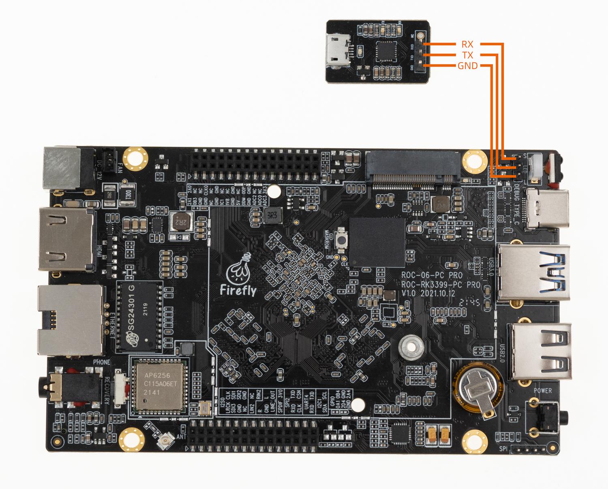
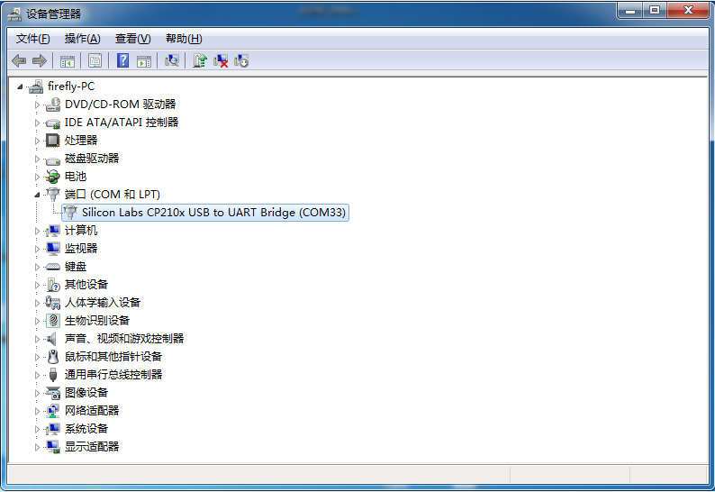

Serial debug¶
If you are doing U-Boot or kernel development, the USB serial adapter (short for USB to serial TTL adapter) is very useful for checking the system startup log, especially when there is no graphical desktop display.
Buy Adapter¶
There are many USB adapter to serial port on the shop, divided by chip, there are the following:
| Serial port | Maximum baud rate | Is it recommended | Evaluation | Purchase link |
|---|---|---|---|---|
| CP2104 | 2Mbps | Yes | Support high baud rate communication, good stability and durability | 点击购买 |
| CH340 | 2Mbps | No | Firefly and many customers have found in actual use that the actual baud rate of many CH340s on the market cannot reach 1.5Mbps, which causes a lot of trouble in the development process | |
| PL2303 | 1.2Mbps | No | The maximum baud rate is less than 1.5Mbps |
Note: The default baud rate of ROC-RK3399-PC Pro is 1500000, some USB to serial chip baud rate can not reach 1500000. The same chip may have different series, so be sure to confirm whether to support before purchasing.
Hardware Connection¶
Serial port to USB adapter, there are four pins:
3.3V Power, no need to connect.
GND，Ground, connect to GND pin of the board.
TXD，Transmit，connect to TX pin of the board.
RXD，Receive, connect to RX pin of the board.
Note: If you encounter the problem that TX and RX cannot input and output when using other serial adapters, you can try to exchange TX and RX connections.
ROC-RK3399-PC Pro serial port connection diagram:

Parameter Setting¶
ROC-RK3399-PC Pro use the following serial parameters:
Baud rate: 1500000
Data bit: 8
Stop bit: 1
Parity check: none
Flow control: none
Use serial on Windows¶
Install Driver¶
Download driver and install:
If you can’t use PL2303 normally on Win8, use 3.3.5.122 or older version of the old driver, please refer to This article. Please find drivers with version 3.3.5.122 or before.
If you install the CP210X driver from the official website on the Windows system, you can set the serial port baud rate to 1500000 using tools such as PUTTY or SecureCRT. If you cannot set the baud rate or it is invalid, you can download the old version driver.
After the adapter is inserted, the system will prompt for the discovery of new hardware and initialization, and then the corresponding COM port can be found in the device manager:

Install Software¶
Putty or SecureCRT is generally used on Windows. Among them, we recommend using the free version of MobaXterm. This is a powerful terminal software. Here we will introduce how to use MobaXterm.
Select
sessiontoSerial.Modify
Serial portto the COM port found in the device manager.Set
Speed (bsp)to 1500000.Click
OKbutton.
Use serial debug on Ubuntu¶
There are many options available on Ubuntu:
minicom
picocom
kermit
The following shows how to use minicom.
Install minicom¶
sudo apt-get install minicom
To connect the serial port line, see what the serial port device file is. The following example is /dev/ttyusb0:
$ ls /dev/ttyUSB*
/dev/ttyUSB0
Run:
$ sudo minicom
Welcome to minicom 2.7
OPTIONS: I18n
Compiled on Jan 1 2014, 17:13:19.
Port /dev/ttyUSB0, 15:57:00
Press CTRL-A Z for help on special keys
Based on the above tips: Press Ctrl-a and then press Z again to bring up the help menu.
+-------------------------------------------------------------------+
| Minicom Command Summary |
| |
| Commands can be called by CTRL-A |
| |
| Main Functions Other Functions |
| |
| Dialing directory..D run script (Go)....G | Clear Screen.......C |
| Send files.........S Receive files......R | cOnfigure Minicom..O |
| comm Parameters....P Add linefeed.......A | Suspend minicom....J |
| Capture on/off.....L Hangup.............H | eXit and reset.....X |
| send break.........F initialize Modem...M | Quit with no reset.Q |
| Terminal settings..T run Kermit.........K | Cursor key mode....I |
| lineWrap on/off....W local Echo on/off..E | Help screen........Z |
| Paste file.........Y Timestamp toggle...N | scroll Back........B |
| Add Carriage Ret...U |
| |
| Select function or press Enter for none. |
+-------------------------------------------------------------------+
Press O to enter the setting interface, as follows:
+-----[configuration]------+
| Filenames and paths |
| File transfer protocols |
| Serial port setup |
| Modem and dialing |
| Screen and keyboard |
| Save setup as dfl |
| Save setup as.. |
| Exit |
+--------------------------+
Move the cursor to Serial port setup, press enter to enter the Serial port setup interface, then enter the letter prompted earlier, select the corresponding option, and set it as follows:
+-----------------------------------------------------------------------+
| A - Serial Device : /dev/ttyUSB0 |
| B - Lockfile Location : /var/lock |
| C - Callin Program : |
| D - Callout Program : |
| E - Bps/Par/Bits : 1500000 8N1 |
| F - Hardware Flow Control : No |
| G - Software Flow Control : No |
| |
| Change which setting? |
+-----------------------------------------------------------------------+
Note: Hardware Flow Control and Software Flow Control should be set to No, otherwise it may not be impossible to input.
After finishing the setting, go back to the previous menu and select Save setup as dfl to save as the default configuration, which will be used by default later.